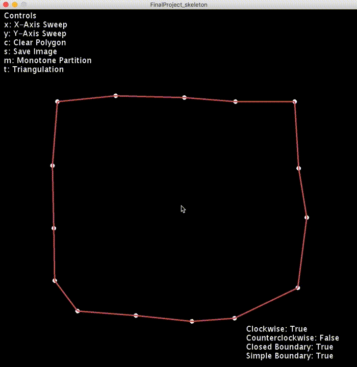

Welcome to our project. We have developed a program in Processing 3 to bring you a geometric triangulation visualizer, namely Monotone Partition and Monotone Triangulation. The idea is for you to create your own polygon using our software and see the process of adding triangles inside the polygon. The program will process your simple polygon input, test to see if it is y-monotone, partition the polygon into y-monotone parts, and finally triangulates each y-monotone subpolygons to the very end.
Lucky for you, we have created a neat tutorial you can follow along as you go nuts on your polygon triangulation adventure.
Before you can start making polygons, we need to ensure you have the neccessary files and program. If you haven't done so already, click here to download the latest version of our project. After you've unzipped the file and opened it, there should be two folders; MonotoneTriangulation and Tutorial.
Navigate to MonotoneTriangualtion, then to FinalProject_skeleton. Click on any of the pde files to open the workspace in Processing 3+.
Once Processing 3+ is opened, click on the run button in the top left corner of the window. This will open a new window that runs the program.
On this screen, you will notice two areas of interests. The top left corner displays the controls of the program. These are the functions of the program which can be activated by pressing the corresponding letters. We will go more in depth into each functionality. The bottom right corner displays information about the polygon.
Click anywhere on the screen to add a point. Each point added will have an edge connected to the previous point, and the first point. Adding 3 or more points will create a simple polygon.
You can also click and drag a point to re-position it.
Start by making a non y-monotone polygon. Drag the points around to reshape the polygon until it is simple or when you're satisfied with your shape.
Press the 'x' button to perform a vertical line intersection test on the polygon. Red lines appears where one of the chains intersect the vertical line more than once. If red lines do appear, that indicates the polygon is not monotone with respect to the y axis. The bottome left corner of the window will also show this.
This will only create Y-monotone polygons. Press the 'm' button and the program will animate the partitioning using trapezoidation. The program will start adding edges to split and merge vertices of the polygon.
Press the 't' button. This performs y monotone triangulation on the subpolygons created from monotone partitioning. You will see an animation of each edge being added to the polygons.
You have successfully triangulated your polygon! Now you're a veteran triangulator. Go ahead and triangulate new polygons.
{kind=link}